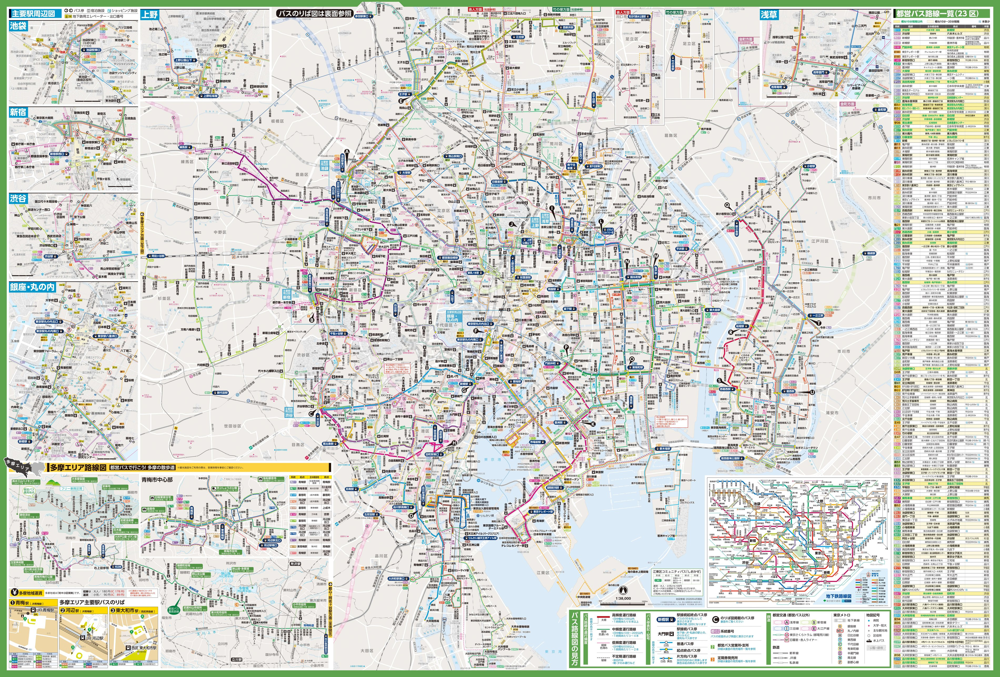
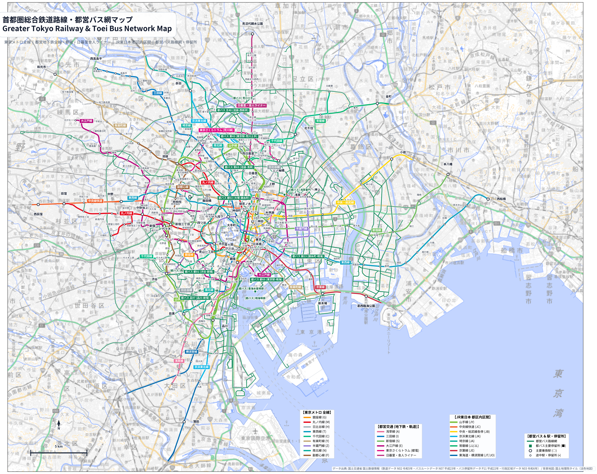

首都圏 鉄道・都バス 統合路線ナビゲーター
東京メトロ / 都営地下鉄・都電・ライナー / JR都区内 / 都営バス全線
インタラクティブ地図
都バス公式路線図 (PDF原本)
全路線統合画像
スマホで共有
レイヤー一覧
表示レイヤー設定
都営バス (Toei Bus)
全165系統
都営バス 路線網 (全線)
透明度:
都バス主要停留所 (🚏)
東京メトロ (Tokyo Metro)
全9路線
東京メトロ 全線
都営交通 (Toei Subway & Tram)
全6系統
都営地下鉄 (浅草・三田・新宿・大江戸)
東京さくらトラム (都電荒川線)
日暮里・舎人ライナー
JR東日本 (JR East)
都区内8系統
山手線・主要在来線
駅・停留所
鉄道全駅 (298駅・駅名ラベル)
背景地図スタイル
国土地理院 淡色地図 (推奨)
OpenStreetMap (標準)
国土地理院 航空写真

拡大
縮小
全体表示
|
最高画質(HD)切替
原本PDFを開く
高解像度PNG保存 (5535x4400)
ベクターSVG保存

スマートフォンで開く
×
スマホやタブレットのカメラでQRコードを読み取ると、このサイトを別デバイスでそのまま開くことができます。
https://abraham-measured-scenes-wagon.trycloudflare.com
閉じる